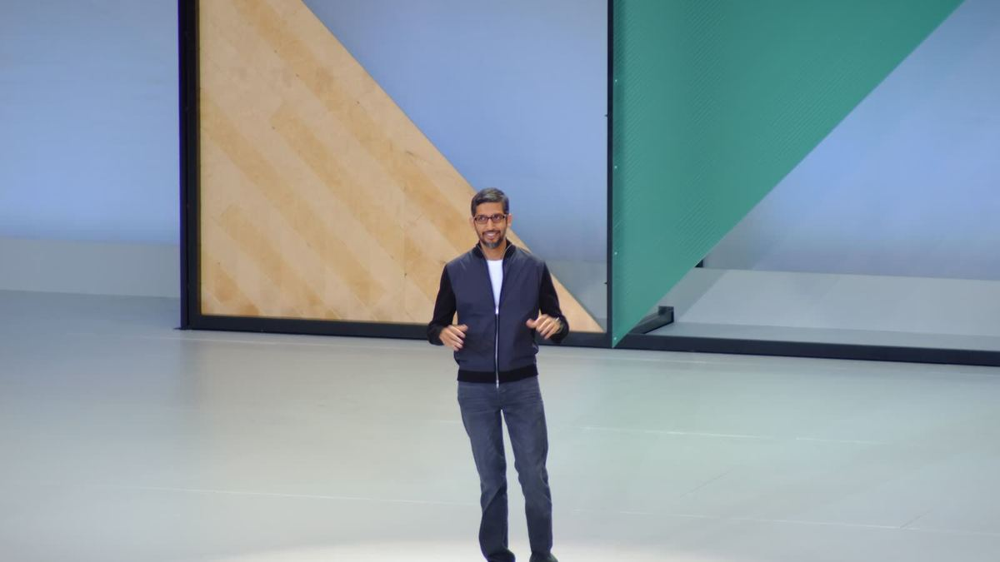

Google jubila los Gems: llegan las «skills», instrucciones reutilizables para Gemini
Las skills llegan a la app de Gemini a partir del 13 de octubre, también para cuentas personales. Los Gems que tengas se convertirán en skills.

Google ha presentado las skills: instrucciones guardadas que puedes reutilizar al hablar con Gemini y combinar en una misma conversación. Sustituirán a los Gems, y los que tengas se migrarán automáticamente como borradores.
Datos clave
Google anunció el 30 de septiembre las skills (habilidades) para la app de Gemini y para Google Workspace. Una skill es una instrucción que guardas una vez y reutilizas cuando quieras: por ejemplo, «escribe en el tono de mi marca» o «prepara un plan de clase con este formato». Se pueden combinar varias en una misma conversación.
Hasta ahora, esa función la cubrían los Gems, versiones personalizadas de Gemini con instrucciones propias. Google dice que las skills los sustituirán: en los próximos meses irá retirando los Gems y migrará automáticamente los que queden en la app de Gemini a skills en borrador.
El despliegue empieza el 5 de octubre en Workspace (Gmail, Docs y el resto de apps de trabajo) y el 13 de octubre en la app de Gemini, y debería completarse a mediados de noviembre. Está disponible para cuentas personales de Google en la app de Gemini y para las ediciones Business y Enterprise de Workspace; en Workspace hace falta ser mayor de edad.
Los Gems dejarán de poder crearse y usarse el 1 de marzo de 2027 en cuentas de empresa y el 1 de junio de 2027 en educación. Antes de esa fecha se pueden pasar a skills a mano.
«Las skills son instrucciones personalizadas y reutilizables que puedes usar siempre que le pidas algo a Gemini en la app de Gemini y en la mayoría de apps de Workspace.»
Qué significa para ti
- Si tienes Gems creados, no se pierden: Google los convertirá en skills en borrador. Revísalos cuando te llegue la función.
- Piensa en las tareas que repites cada semana (un resumen, un correo tipo, un formato de informe) y guárdalas como skill.
- Una buena skill es un buen prompt guardado: usa nuestra biblioteca de prompts como punto de partida.
Para aprovecharlo
Fuentes
¿Ves un error? Avísanos y lo corregimos en la fe de erratas.